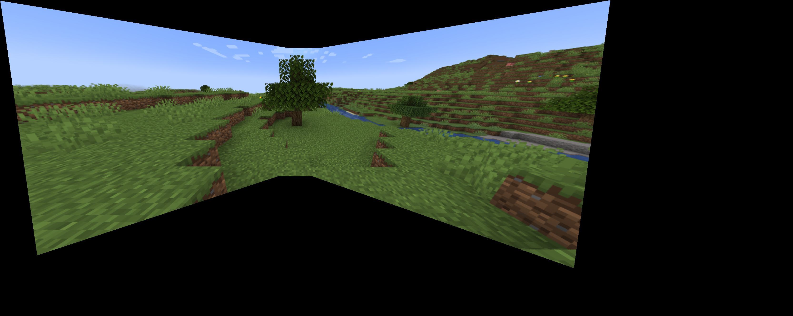

CS180 Project 4
[Auto]Stitching Photo Mosaics
by Ruiqi Wang
Part A: Image Warping and Mosaicing
Overview
In the first part of project 4, I took pictures with a fixed center of projection and rotated my cameras.
Then, I recovered linear homographies and warp images according to that, and blend warped images together into a mosaic.
Part 1: Shoot the Pictures
Preprocessing
I rezied the images to have a proper size to avoid long runtime for the following part.
I took 3 groups of pictures:
(1) buildings scene from my balcony
(2) the door of my apartment
(3) Minecraft views
Recover Homographies
Defining Correspondences
I used the tool provided in project 3 to manually define correspondence points. The points spread out the whole image.
Compute the Homography matrix
Given a set of correspondence points:
- (x, y) in image 1
- (x', y') in image 2
The homography equation is:
[x',y',1]
=
H
[x,y,1]
These can be rearranged to:
Each point pair (x, y) and (x', y') generates two equations:
For the first equation:
For the second equation:
Thus, I build up a linear equation system to solve for the 8 unknowns for H using SVD and computed H.
Part 3: Warp the Images
Approach
Before warping the images according to the homography matrix computed in part 2,
I added a alpha channel for the unwarped image:
I set it to 1 at the center of each (unwarped) image and made it fall off linearly until it hits 0 at the edges.
This alpha channel helps to identify the pixels that are not "painted" after warping,
and can be used for weighted average when blending the images into a mosaic.
Then, I computed the output shape of warped image.
If not specified, I warp the corners of original image and transform them using the homography.
Then, find minimum and maximum coordinates in x and y directions, and take the difference between them as the output window size.
Finally, I used inverse warping to paint the warped image. I take all pixels i output window,
add the offsets(min_x, min_y if offsets are not specified), and compute their corresponding location in the original image.
Then, use scipy.interpolate.griddata to interpolate all 4 channels(R, G, B and alpha channel) and paint the pixels in a vectorized way.
The function returns the warped image with 4 channels.
Part 3: Image Rectification
Approach
I got two examples, my keyboard and my notebook. I used the correspondence point tool to get the 4 corner points of each image.
Then I manually made an array of the 4 corners of a sqaure, and expand the sqaure according to the height and width of the image "rectangle".
Finally, use computeH and warpImage functions defined in previous parts to warp the object in the image to be a rectangle.
Result:

Original Keyboard
Part 4: Blend the images into a mosaic
Approach
(1) Compute the output shape
Firstly, I need to compute the size for the mosaic. To do this, I iterate over all images and transform their corners,
and then find the maximum and minimum in x and y directions of all corners.
If min_x or min_y goes lower than 0, there should be a universal translation on all images to avoid cutting those parts.
After that, the difference between maximum and minimum plus the potential universal translation should be the size of the result mosaic.
(2) Warp each image to the target image
I used computeH to compute the homography for each image using their correspondence points. There should be one image who needs no transform, whose homography should be the identity matrix.
Then, add the universal translation computed before to the homography to let the correspondence points align in the final mosaic.
warp the image respectively using warImage with the computed mosaic shape.
(3) Blend the warped images together
I used the extra alpha channel returned by warpImage to blend the warped images.
Use warped alpha value as weight for each pixel, and record the sum of alpha values to calculate a weighted average in R,G,B channels.
Finally, remove the alpha channel after blending.
Result for buildings
Original images of buildings
Result for the door (Vertical mosaic)
Original mages of the door
Result for Minecraft Images
Original images from Minecraft
